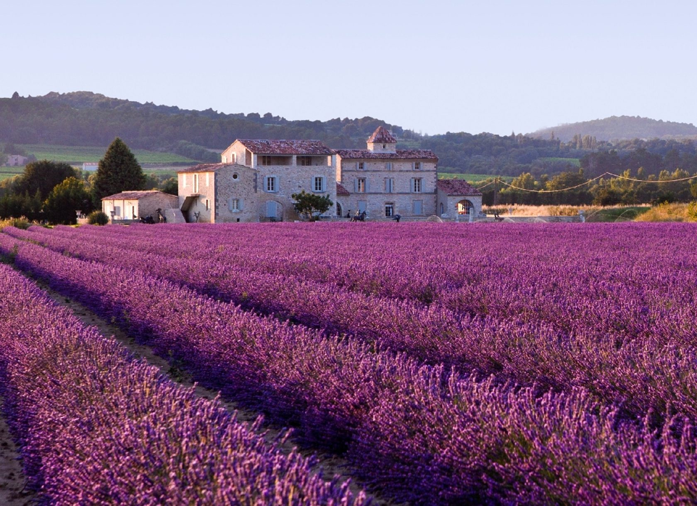

Прованс – историческая область Франции, занимающая юго-восточную часть страны. Само название Прованс восходит к эпохе римского завоевания Галлии. Оказавшиеся в их владении южные земли за Альпами римляне называли «Provincia Nostra» – «наша провинция», или просто «Provincia» – «провинция». Сегодня эта историческая территория официально является составляющей частью региона Прованс – Альпы – Лазурный берег, сами же районы Прованса административно разделены между шестью департаментами региона.
Прованс
